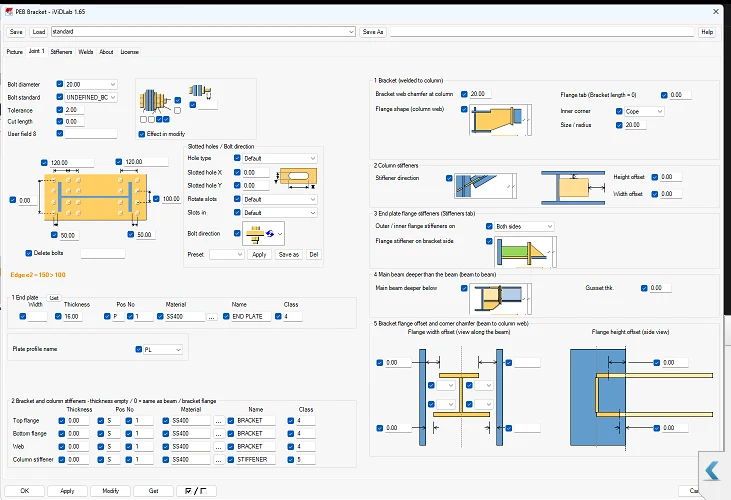

PEB Bracket (CC3) 1.65P — sửa lỗi liên kết không nhận khi có End Plate to Flange cắt cánh cột chính
Khi cột chính đã có liên kết End Plate to Flange và cánh cột bị cắt ở vị trí đó, PEB Bracket (CC3) trước đây không tạo được liên kết. Bản 1.65P đo lại được cột trong trường hợp này và dựng bracket bình thường.
Tóm tắt nhanh
- Lỗi đã sửa: cột chính có End Plate to Flange cắt cánh thì PEB Bracket (CC3) không nhận được liên kết.
- Tìm component: trong bảng Applications & components gõ PEB Bracket (mã nội bộ của iViDLab là CC3).
- Trường hợp cột còn đủ hai cánh không thay đổi.
- Có thêm: offset cánh bracket độc lập từng cánh và từng bên, bật tắt chamfer từng góc cánh bracket.
1. Lỗi gì và vì sao
Cách tạo liên kết: chọn cột PEB, chọn dầm PEB, chạy PEB Bracket (CC3). Để dựng cánh và gân bracket cho khớp cột, CC3 phải biết bề rộng cột tại cao độ của bracket; nó đo bằng cách bắn tia qua hai cánh cột.
Khi cột chính có liên kết End Plate to Flange và cánh cột bị cắt ở đúng cao độ đó, chỉ còn một cánh cho tia trúng. CC3 thiếu cánh thứ hai nên coi như không đo được cột và dừng, không tạo liên kết.
2. Bản 1.65P xử lý thế nào
- CC3 đo cột ở nhiều vị trí lân cận thay vì một vị trí cố định.
- Nếu vẫn chỉ thấy một cánh, CC3 lấy cánh đó làm chuẩn và coi cột đối xứng qua tâm bụng cột, rồi dựng bracket và gân cột như bình thường. Nhật ký ghi dòng
column flange missing on one side … mirrored about the web plane. - Lấy đối xứng theo tâm bụng cột thật, không theo trục dầm, nên cột lệch trục dầm vẫn đúng và cánh bracket không còn lấn vào tấm End Plate / Insert của EPF (sửa ở 1.62P).
- Cột còn đủ hai cánh: cách đo và kết quả giữ nguyên.
Lưu ý
- Cách này đúng với cột có tiết diện đối xứng qua bụng (cột I thông thường). Nếu hai cánh cột khác bề rộng, hãy kiểm lại cánh bracket và gân cột sau khi tạo.
- Đã kiểm trên Tekla Structures 2017 với model có End Plate to Flange cắt cánh cột; các bản Tekla khác chưa thử riêng cho trường hợp này.
3. Cũng có trong bản này
Gói trên web trước đó là 1.49P; 1.65P gồm cả các thay đổi từ 1.50 đến 1.64:
- Offset cánh bracket độc lập từng cánh và từng bên: nhóm 5 Bracket flange offset and corner chamfer ở tab Joint 1 có 4 ô Width offset (cánh trên và cánh dưới, mỗi cánh bên trái và bên phải) và 2 ô Height offset (cánh trên, cánh dưới), kèm hai hình minh họa. Áp dụng cho dầm vào bụng cột. Ô Width offset cũ nay chỉ áp cho bên trái; ô bên phải mới mặc định 0.
- Chamfer từng góc cánh bracket: 4 ô Yes/No đặt ngay cạnh các góc trong hình, thay cho ô Both / Top only / Bottom only / None. Điều khiển 2 góc vát ở đầu cánh sát bụng cột; vát bụng bracket luôn cả 2 góc. Giá trị Top only / Bottom only đã lưu từ bản cũ không được chuyển: liên kết cũ quay về Yes cả 4 góc.
- Danh sách khoảng cách bu-lông đọc không còn phụ thuộc dấu thập phân của Windows.

4. Cách nâng cấp
- Ở mục Tải về bên dưới, tải gói
iVidLab.PEBBracket_1.65P.tsep. - Nếu đã cài bản cũ, gỡ bản cũ trong Tekla Extension Manager trước.
- Nhấp đúp file
.tsep, tick phiên bản Tekla rồi bấm Import. Gói được cài khi Tekla khởi động lần tiếp theo.
PEB Bracket (CC3) 1.65P — fix: connection not applied when an End Plate to Flange cuts the main column flange
When the main column already has an End Plate to Flange connection and its flange is cut at that spot, PEB Bracket (CC3) used to create nothing. Version 1.65P can measure the column in this case and builds the bracket normally.
At a glance
- Fixed: with an End Plate to Flange cutting the main column flange, PEB Bracket (CC3) did not create the connection.
- Finding the component: in the Applications & components panel type PEB Bracket (iViDLab's internal code is CC3).
- Columns that still have both flanges are unchanged.
- Also new: bracket-flange offsets per flange and per side, and chamfer on/off for each bracket-flange corner.
1. What went wrong and why
You pick the PEB column, then the PEB beam, and run PEB Bracket (CC3). To fit the bracket flanges and stiffeners to the column, CC3 must know the column width at the bracket level; it measures it by casting rays through the two column flanges.
With an End Plate to Flange connection on the main column and the flange cut at that level, only one flange is left to hit. CC3 had no second flange, treated the column as unmeasurable and stopped without creating the connection.
2. How 1.65P handles it
- CC3 measures the column at several nearby positions instead of one fixed position.
- If it still finds only one flange, CC3 uses it as the reference and treats the column as symmetric about the column web centre, then builds the bracket and column stiffeners as usual. The log shows
column flange missing on one side … mirrored about the web plane. - The reflection uses the real column web centre, not the beam axis, so a column offset from the beam axis is handled and the bracket flange no longer runs into the End Plate / Insert plates of the EPF (fixed in 1.62P).
- Columns with both flanges present: measurement and result are unchanged.
Note
- This is correct for columns symmetric about the web (ordinary I-sections). If the two column flanges have different widths, check the bracket flanges and column stiffeners after creating the connection.
- Checked on Tekla Structures 2017 with a model where an End Plate to Flange cuts the column flange; other Tekla versions have not been tried for this case specifically.
3. Also in this release
The package on the site was 1.49P; 1.65P includes everything from 1.50 to 1.64:
- Bracket-flange offsets per flange and per side: group 5 Bracket flange offset and corner chamfer on the Joint 1 tab has 4 Width offset fields (top and bottom flange, each with a left and a right side) and 2 Height offset fields (top, bottom flange), with two illustrations. For beams framing into the column web. The old Width offset fields now apply to the left side only; the new right-side fields default to 0.
- Chamfer per bracket-flange corner: 4 Yes/No fields placed next to the corners in the picture, replacing the Both / Top only / Bottom only / None combo. They control the 2 corner chamfers at the flange end next to the column web; the web chamfer always stays on both corners. A Top only / Bottom only value saved by an older version is not migrated: old connections go back to Yes on all 4 corners.
- Bolt distance lists are no longer affected by the Windows decimal separator.
4. How to upgrade
- In the Download section below, get
iVidLab.PEBBracket_1.65P.tsep. - If an older version is installed, uninstall it in Tekla Extension Manager first.
- Double-click the
.tsepfile, tick your Tekla version and click Import. It is installed the next time Tekla starts.
Tải vềDownload

Nhóm Zalo người dùng iViDLabiViDLab user group on Zalo
Quét mã QR hoặc bấm nút bên cạnh để vào nhóm: hỏi đáp khi sử dụng, báo lỗi và nhận thông báo bản cập nhật mới.
Scan the QR code or use the button to join the group: usage questions, bug reports and new release announcements.
Liên hệ iViDLabContact iViDLab
Theo dõi fanpage Facebook hoặc gửi email để được hỗ trợ và góp ý.
Follow the Facebook page or send an email for support and feedback.